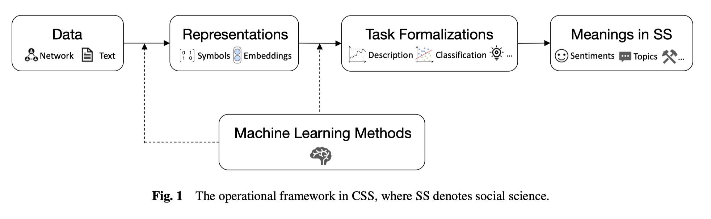
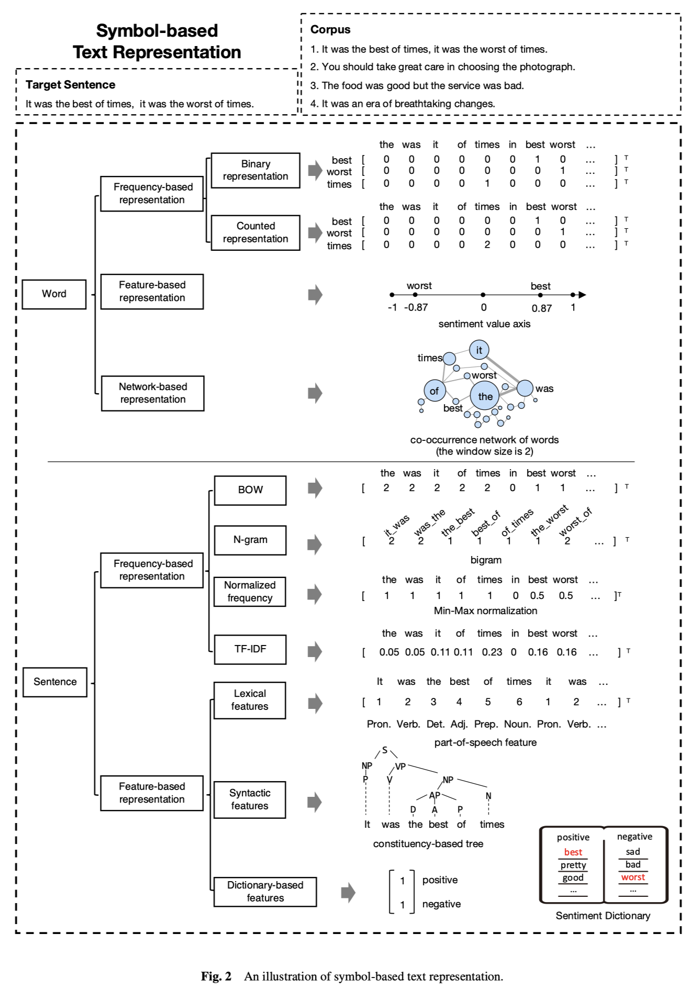
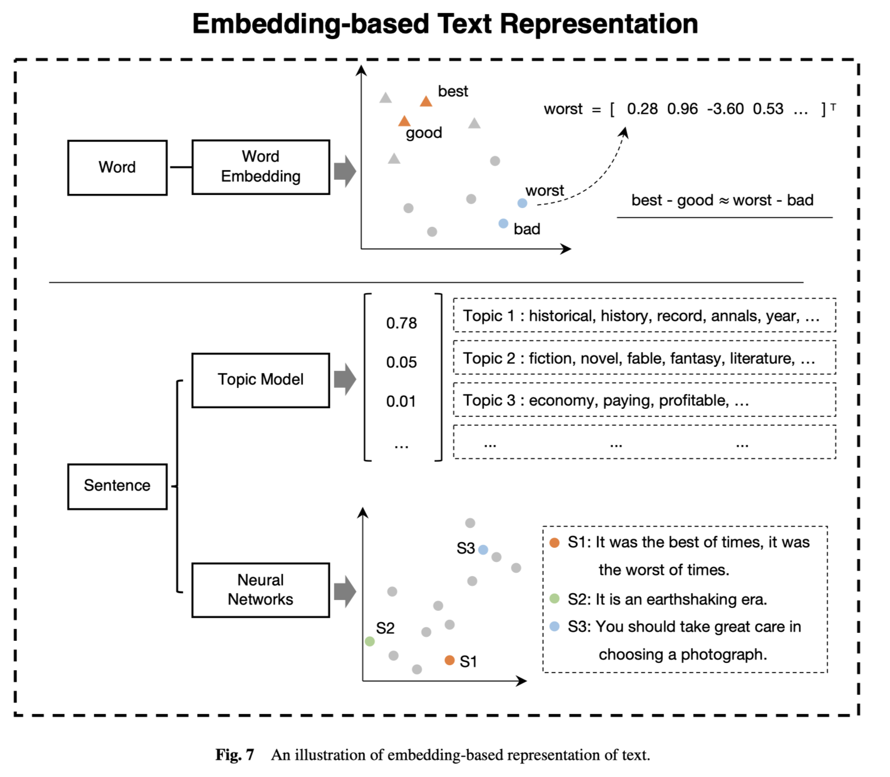
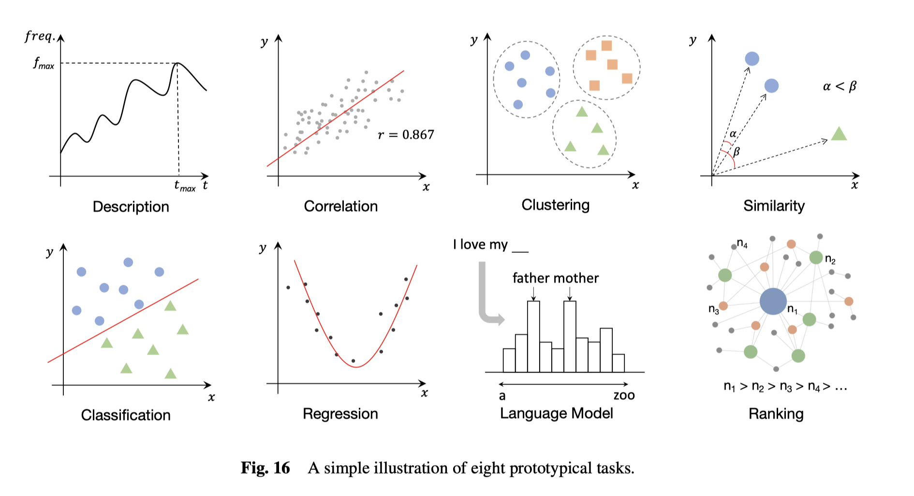
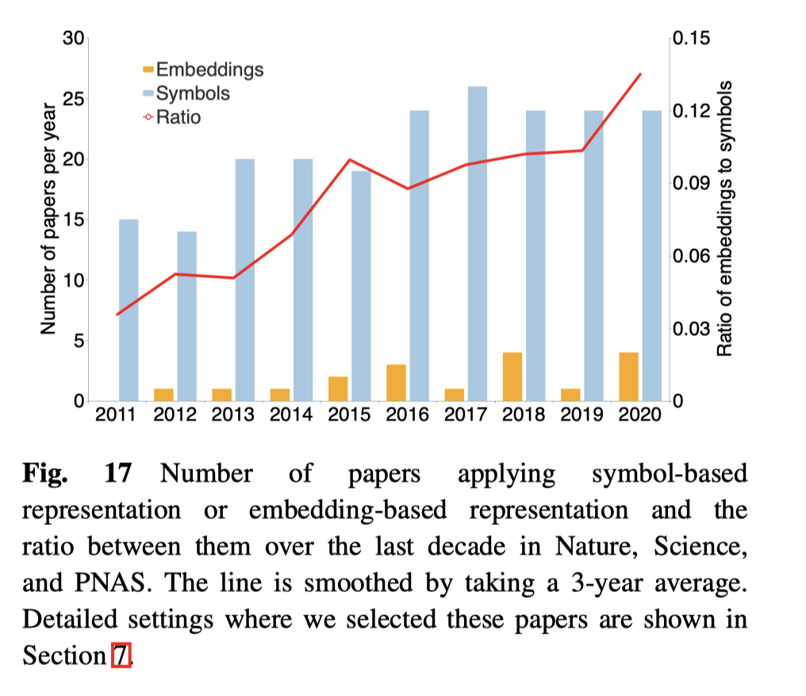
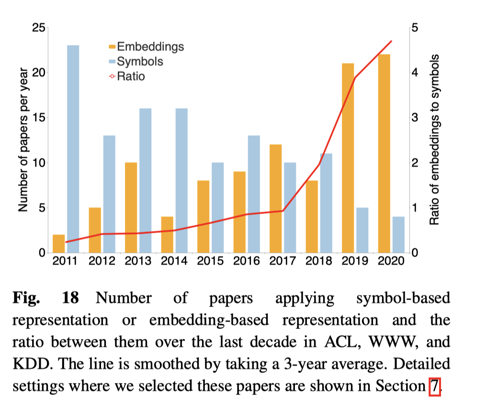

B站看到大牛刘知远关于文本分析在计算社会科学领域应用的分享，解答了我对文本表示的疑惑，看完了能对文本的特征工程加深理解，同时也能更清晰未来如何借助计算机科学技术开展社会科学研究。
全文摘抄自
Chen, H., Yang, C., Zhang, X., Liu, Z., Sun, M. and Jin, J., 2021. From Symbols to Embeddings: A Tale of Two Representations in Computational Social Science. Journal of Social Computing, 2(2), pp.103-156.
摘要
计算社会科学（CSS），旨在利用计算方法来解决社会科学问题，是一个新兴和快速发展的领域。 CSS 的研究是数据驱动的，并且显着受益于在线用户生成内容和社交网络的可用性，其中包含用于调查的富文本和网络数据。然而，这些大规模、多模态的数据也给研究人员带来了很大的挑战：如何有效地表示数据以挖掘我们想要的 CSS 含义？为了探索答案，我们对 CSS 中文本和网络的数据表示进行了彻底的回顾，我们将现有的表示总结为两个方案，即基于符号的表示和基于嵌入的表示，并为每个方案介绍了一系列典型的方法。随后，我们基于对来自 6 个涉及 CSS 的顶级场所的 400 多篇研究文章的调查，展示了上述表示的应用。从这些应用程序的统计数据中，我们挖掘出每种表示的强度，并发现基于嵌入的表示在过去十年中出现并获得越来越多的关注的趋势。最后，我们讨论了几个关键挑战和未来方向的开放性问题。本调查旨在为 CSS 研究人员提供对数据表示的更深入理解和更明智的应用。
关键词：计算社会科学；基于符号的表示；基于嵌入的表示；社交网络
一、计算社会学数据分析流程
其中第二步，数据表示目前有两大类表示(特征工程)方法
- 基于符号的文本表示；符号可以是单词(或词组)，也可以是概念(如正面情感、负面情感)
- 基于嵌入(分布式)的文本表示；相比于符号法，将词(词组)看做一个点。嵌入表示认为词是存在更多浅藏含义，存在亲疏远近，是可以比较的词向量。词向量可以有v(king)-v(queen)约等于v(man)-v(woman)

二、基于符号的文本表示
基于符号的文本表示一般来说默认词语是不可分的符号，每个词能根据词频统计出现次数的多与少，或是否存在。
2.1 词语层面
-
基于词频表示
- 是否出现，出现标位1，反之标位0。
- 出现多少，词语出现几次，标为几个。
-
基于特征表示，如每个词带有权重(得分)
-
基于网络表示，如词语共现网络(矩阵)
2.2 句子层面
-
基于词频的表示
- one-hot 将文本转为向量，向量中每个数，词语出现标位1，反之标位0
- bag-of-words，将文本转为向量，向量中每个数，词语出现n次标记为n
- n-grams，对词组的处理，将词组看做一个单词(整体)。
- Tf-Idf ,该算法分为tf和idf两部分。其中tf与bag-of-words类似，考虑词语出现次数。而idf还考虑词语在语料中出现场景的稀缺性程度。
-
基于语法特征，如句法依存关系，类似于英语语法，将句子分为主谓宾、动词、名词等。
-
词典法，如使用正、负情感词典，对文本数据进行情感分析，可以得到pos和neg的各自得分

三、基于嵌入的文本表示
3.1词语层面
嵌入表示认为词是存在更多浅藏含义，存在亲疏远近，是可以比较的词向量。词向量可以有v(best)-v(good)约等于v(worst)-v(bad)
3.2 句子层面
词语是向量，那么由词语组成的句子也会加权得到一个向量。含有相似话题或含义相近的句子在多维向量空间中会比较接近。

四、任务分类：文本的用法

有了文本数据，刚刚解决了如何表示文本。接下来，需要明确，我们使用文本目的是为了做哪类分析，得到哪些信息。有8种常见的文本分析图式
- 描述性。如随时间推移，词频的发展趋势是变大的
- 相关性。
- 聚类。如lda话题分析、k-means聚类
- 相似度。两个文档转为向量后，可以通过cosine计算相似度
- 分类。机器学习分类，判断某文本隶属于哪个类别
- 回归。例如根据文本，判断某件事发生的概率
- 语言模型。
- 排序。
五、发文趋势-符号vs嵌入
基于上一节中对应用程序的介绍，可以观察到基于符号和基于嵌入的表示在 计算社会科学中都得到了相当大的采用。为了明确研究它们的覆盖范围，我们计算了每年使用两种表示中的一种或两种的作品数量，如图 17 所示。通过比较nature、science、pnas三大顶级期刊，我们可以发现使用基于嵌入表示的文章比例在过去几年中逐渐。这表明越来越多的 计算社会科学文章 已经考虑并受益于基于嵌入表示。
图 18 显示了在 计算机领域ACL、WWW 和 KDD 的会议上中，发现使用基于嵌入的表示的文章数量已大大超过使用基于符号的表示的文章数量。然而，与图 17 相比，计算机科学会议中基于嵌入的表示的数量与三个多学科期刊之间存在很大差距。


总而言之，在过去十年中，基于嵌入的表示已经出现并在 计算社会科学 中发挥着越来越重要的作用。
六、趋势解读
基于它们的内部机制和现有应用，对趋势解读，我们总结出以下三个关键点。
基于符号的表示因其明确性和可解释性而擅长描述和关系的任务。
基于符号的表示中的每个值都表示一定的人类可读的含义，因此我们可以直接使用它来观察数据的分布，以及提取对象之间的关系。例如，基于频率的词表示用于观察文化变化并捕捉新闻中提及次数与公司股票交易量之间的关系。虽然基于主题模型的表示和一些基于神经的表示在一定程度上具有实际意义，但它们对于社会科学研究人员来说仍然是模糊的并且不那么引人注目。
由于神经网络具有强大的拟合数据和提取深度语义的能力，基于嵌入的表示在预测（例如分类和回归）和相似性任务中表现更好。一方面，神经网络通过大规模神经元的连接实现高效的输入输出映射功能。另一方面，通过多层网络的构建，实现深层语义和抽象概念的提取。现有研究表明，深层捕获相对于浅层更抽象的特征。诸如社会偏见和道德化之类的抽象概念都可以通过基于嵌入的表示来很好地衡量。虽然我们提到基于符号的表示可以通过一些定义的符号来代表抽象概念，但这种表示仍然是部分和肤浅的，很难捕捉到它们的全貌。
基于嵌入的表示需要更少的人力。基于符号的表示通常需要大量的专家知识来定义研究对象的特征，这是劳动密集型的。此外，对于一些没有充分特征的抽象概念或对象，它们的表现将受到限制。与它们不同的是，基于嵌入的表示是从数据中自动提取的，几乎不需要人工干预，甚至可以补充人类知识。例如，可以使用神经网络来自动恢复丢失的巴比伦文本，这即使对专家来说也是具有挑战性的。此外，基于嵌入的表示可以在没有手动定义的情况下描述语言的复杂性和歧义性。
七、未来展望
尽管在过去十年中出现了从符号到嵌入的趋势，但仍有许多挑战和悬而未决的问题有待探索。展望未来，我们列出了一些与计算社会科学 中的数据表示相关的基本和潜在的未来方向。
预训练的语言模型。近年来，预训练的语言模型受到了相当大的关注，并在处理文本数据方面取得了巨大的成功 [100, 240]。这些模型从百科全书和书籍等海量文本数据中学习丰富的语义信息，仅在下游任务中进行微调以实现有效的基于嵌入的表示。因此，对于 计算社会科学，我们可以借助预训练的语言模型获得更通用、更健壮的文本表示。与从传统神经网络模型中学习的表示相比，这些表示不仅可以更广泛、更准确地从文本中分析社会现象，而且还可以减少那些需要大量标记数据的任务的人工注释。
图神经网络。通过消息传递机制，图神经网络 [461] 可以同时有效地对网络拓扑和节点/边缘特征（例如文本信息）进行建模，从而提供一个统一的框架来利用来自异构来源的信息。 计算社会科学 中的许多场景需要处理社交网络以及个人特征。因此，图神经网络技术在 计算社会科学 研究中具有很大的应用潜力，可以学习融合文本和网络信息的表示。事实上，计算机科学中的各种应用，例如自然语言处理 [418] 和推荐系统 [439]，已经采用图神经网络进行建模。
设计为预测和相似性。基于嵌入的表示以丰富和深层次的语义而闻名，而基于符号的表示通常保留在部分和浅层语义中。同时，基于嵌入的表示擅长预测和相似性的任务。因此，为了充分利用嵌入中的强语义，鼓励 计算社会科学 研究人员尽可能将研究问题设计为预测或相似性任务。例如，我们可以将社会偏见问题设计为性别词和中性词嵌入之间的相似性度量 [59, 133]。此外，人类语言的复杂性可以设计为一项预测任务，它以语言模型为指标查看单词或句子的预测概率[155]。
可解释性。诚然，基于嵌入的方法的一个缺点是缺乏可解释性。这个问题会损害与道德、安全或隐私相关的决策关键系统的应用。尽管嵌入模型，尤其是神经网络模型的可解释性尚未完全解决，但计算机科学领域的研究人员已经做出了一些努力，以提高基于神经模型的可解释性 [16]。因此，利用基于嵌入的模型和可解释性分析方法进行有效和（部分）可解释的预测将是一个有趣的方向。
结论
计算社会科学作为一个新兴且有前途的跨学科领域，近年来吸引了相当多的研究兴趣。 计算社会科学 研究中广泛使用两种主要类型的数据，即文本数据和网络数据。在本次调查中，我们首先将数据表示总结为基于符号和基于嵌入的表示，并在构建这些表示时进一步介绍典型的方法。之后，我们基于来自 6 个经典期刊和会议的 400 多篇高被引文献，对这两类表示的应用进行了全面回顾。根据对这些应用的统计，发现了 计算社会科学 中基于嵌入的文本和网络表示正在出现和增长的趋势，我们进一步讨论了其中的原因。最后，我们提出了 计算社会科学 中的四个挑战和未解决的问题，它们是需要探索的基本和潜在方向。